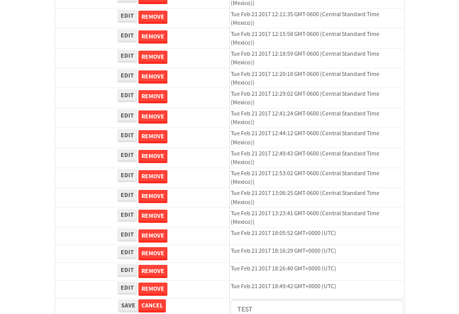

tbColumn.Grid Sorting - 25.698sTests: 5Skipped: 0Failures: 0 should sort data in ascending order then on descending order when sorting by Order Id column - 5.169sTests passed: 100.00%should order data in ascending order when click-sorting an unsorted text column - 4.811sTests passed: 100.00%should order data in descending order when click-sorting an ascending-sorted text column - 5.448sTests passed: 100.00%should order data in ascending order when click-sorting an unsorted date column - 5.076sTests passed: 100.00%should order data in descending order when click-sorting twice an unsorted date column - 5.193sTests passed: 100.00%
tbEmptyForm - 3.513sTests: 3Skipped: 0Failures: 1 should have an empty required field - 0.938sTests passed: 100.00%should not be able to click on save - 0.538sExpected null not to be null null.✗Tests passed: 50.00%should load default value for numeric field - 0.517sTests passed: 100.00%
Tubular Filters.tbColumnFilter - 108.021sTests: 12Skipped: 0Failures: 0 should cancel filtering when clicking outside filter-popover - 8.942sTests passed: 100.00%should disable Value text-input for "None" filter - 6.732sTests passed: 100.00%should disable apply button for "None" filter - 6.9sTests passed: 100.00%should decorate popover button when showing data is being filtered for its column - 12.189sTests passed: 100.00%should correctly filter data for the "Equals" filtering option - 8.439sTests passed: 100.00%should correctly filter data for the "Not Equals" filtering option - 8.145sTests passed: 100.00%should correctly filter data for the "Contains" filtering option - 8.66sTests passed: 100.00%should correctly filter data for the "Not Contains" filtering option - 8.483sTests passed: 100.00%should correctly filter data for the "Starts With" filtering option - 7.035sTests passed: 100.00%should correctly filter data for the "Not Starts With" filtering option - 7.051sTests passed: 100.00%should correctly filter data for the "Ends With" filtering option - 6.896sTests passed: 100.00%should correctly filter data for the "Not Ends With" filtering option - 7.228sTests passed: 100.00%
Tubular Filters.tbColumnDateTimeFilter - 138.154sTests: 12Skipped: 0Failures: 0 should cancel filtering when clicking outside filter-popover - 7.278sTests passed: 100.00%should disable Value text-input for "None" filter - 6.355sTests passed: 100.00%should disable apply button for "None" filter - 6.813sTests passed: 100.00%should clear filtering when clicking on Clean button - 18.36sTests passed: 100.00%should decorate popover button when showing data is being filtered for its column - 12.091sTests passed: 100.00%should correctly filter data for the "Equals" filtering option - 6.983sTests passed: 100.00%should correctly filter data for the "Not Equals" filtering option - 7.717sTests passed: 100.00%should correctly filter data for the "Between" filtering option - 12.941sTests passed: 100.00%should correctly filter data for the "Greater-or-equal" filtering option - 12.389sTests passed: 100.00%should corretlly filter data for the "Greater" filtering option - 12.22sTests passed: 100.00%should correctly filter data for the "Less-or-equal" filtering option - 12.237sTests passed: 100.00%should correctly filter data for the "Less" filtering option - 12.172sTests passed: 100.00%
Tubular Filters.tbColumnOptionsFilter - 83.464sTests: 3Skipped: 0Failures: 0 should cancel filtering when clicking outside filter-popover - 9.549sTests passed: 100.00%should decorate popover button when showing data is being filtered for its column - 12.324sTests passed: 100.00%should filter column-elements in accordance to the selected filter when selecting a single option - 50.43sTests passed: 100.00%
Tubular Filters.tbTextSearch - 49.665sTests: 5Skipped: 0Failures: 0 min-chars is not set - 1.329sTests passed: 100.00%should filter data in searchable-column customer name to matching inputted text, starting from 3 characters - 7.254sTests passed: 100.00%should filter data in searchable-column shipper city to matching inputted text, starting from 3 characters - 12.1sTests passed: 100.00%should show clear button when there is inputted text only - 6.54sTests passed: 100.00%should clear filtering when clicking clear button - 16.859sTests passed: 100.00%
tbForm related components.tbCheckboxField - 7.591sTests: 2Skipped: 0Failures: 0 should save changes on "SAVE" - 3.72sTests passed: 100.00%should discard changes on "CANCEL" - 2.431sTests passed: 100.00%
tbForm related components.tbDropDownEditor - 12.206sTests: 5Skipped: 0Failures: 0 should set initial input value to the value of "value" attribute when defined - 1.931sTests passed: 100.00%should show the component name value in a label field when "showLabel" attribute is true - 1.773sTests passed: 100.00%should show a help field equal to this attribute, is present - 1.886sTests passed: 100.00%should submit modifications to item/server when clicking form "Save" - 3.68sTests passed: 100.00%should NOT submit modifications to item/server when clicking form "Cancel" - 2.355sTests passed: 100.00%
tbForm related components.tbTextArea - 18.978sTests: 7Skipped: 0Failures: 0 should set initial input value to the value of "value" attribute when defined - 2.513sTests passed: 100.00%should be invalidated when the number of chars is not in the range of "min" and "max" attributes - 2.713sTests passed: 100.00%should show the component name value in a label field when "showLabel" attribute is true - 2.192sTests passed: 100.00%should show a help field equal to this attribute, is present - 1.916sTests passed: 100.00%should require the field when the attribute "required" is true - 2.04sTests passed: 100.00%should submit modifications to item/server when clicking form "Save" - 3.856sTests passed: 100.00%should NOT submit modifications to item/server when clicking form "Cancel" - 3.028sTests passed: 100.00%
tbForm related components.tbDateEditor - 16.183sTests: 6Skipped: 0Failures: 0 should set initial date value to the value of "value" attribute when defined - 2.062sTests passed: 100.00%should be invalidated when the date is not in the range of "min" and "max" attributes - 2.875sTests passed: 100.00%should show the component name value in a label field when "showLabel" attribute is true - 2.576sTests passed: 100.00%should show a help field equal to this attribute, is present - 2.184sTests passed: 100.00%should submit modifications to item/server when clicking form "Save" - 2.638sTests passed: 100.00%should NOT submit modifications to item/server when clicking form "Cancel" - 2.965sTests passed: 100.00%
tbForm related components.tbTypeaheadEditor - 19.007sTests: 7Skipped: 0Failures: 0 should show an options list when there is an API-info/component entered-data - 2.301sTests passed: 100.00%should select the option clicked - 2.807sTests passed: 100.00%should show a "delete" button when an option/match is selected, and delete the option if button is clicked - 2.655sTests passed: 100.00%should show a label value equal to the component name when "showLabel" attribue is true - 2.009sTests passed: 100.00%should require a value when "require" attribute is true - 2.66sTests passed: 100.00%should submit modifications to item/server when clicking form "Save" - 3.387sTests passed: 100.00%should NOT submit modifications to item/server when clicking form "Cancel" - 2.248sTests passed: 100.00%
tbForm related components.tbSimpleEditor - 23.484sTests: 9Skipped: 0Failures: 0 should set initial input value to the value of "value" attribute when defined - 1.828sTests passed: 100.00%should be invalidated when the number of chars is not in the range of "min" and "max" attributes - 2.655sTests passed: 100.00%should show the component name value in a label field when "showLabel" attribute is true - 2.294sTests passed: 100.00%should set input placeholder to the value of "placeholder" attribute - 2.375sTests passed: 100.00%should validate the control using the "regex" attribute, if present - 2.056sTests passed: 100.00%should show a help field equal to this attribute, is present - 1.898sTests passed: 100.00%should require the field when the attribute "required" is true - 2.662sTests passed: 100.00%should submit modifications to item/server when clicking form "Save" - 4.41sTests passed: 100.00%should NOT submit modifications to item/server when clicking form "Cancel" - 2.607sTests passed: 100.00%
tbForm related components.tbNumericEditor - 17.996sTests: 7Skipped: 0Failures: 0 should set initial component value to the value of "value" attribute when defined - 1.977sTests passed: 100.00%should be invalidated when the entered number is not in the range of "min" and "max" attributes - 2.406sTests passed: 100.00%should show the component name value in a label field when "showLabel" attribute is true - 2.118sTests passed: 100.00%should show a help field equal to this attribute, is present - 1.891sTests passed: 100.00%should require the field when the attribute "required" is true - 2.026sTests passed: 100.00%should submit modifications to item/server when clicking form "Save" - 4.063sTests passed: 100.00%should NOT submit modifications to item/server when clicking form "Cancel" - 2.581sTests passed: 100.00%
tbForm Connection Error NoModelKey - 2.503sTests: 1Skipped: 0Failures: 0 tbForm connection error functionality - 0.568sTests passed: 100.00%
tbForm Connection Error NoServerUrl - 2.514sTests: 1Skipped: 0Failures: 0 tbForm connection error functionality - 0.519sTests passed: 100.00%
tbGridComponents - 51.371sTests: 6Skipped: 0Failures: 4 should add item with newRow method - 5.537sExpected 'EDIT REMOVE Tue Feb 21 2017 19:08:25 GMT+0000 (UTC)' not to be 'EDIT REMOVE Tue Feb 21 2017 19:08:25 GMT+0000 (UTC)'.✗Tests passed: 50.00%should add item with newRow method and cancel action - 1.338sTests passed: 100.00%should update item with tbSaveButton - 20.083sExpected '' to be 'TEST'.✗Tests passed: 0.00%should NOT update item on cancel Update action - 0.775sFailed: ElementNotVisibleError✗Tests passed: 0.00%should remove item with tbRemoveButton - 20.987sExpected 100 not to be 100, 'should remove the row from the table'.✗Tests passed: 50.00%should NOT remove item on cancel Remove action - 1.094sTests passed: 100.00%
tbGridPager.navigation buttons - 8.958sTests: 1Skipped: 0Failures: 0 should perform no action when clicking on the numbered navigation button corresponding to the current-showing results page - 1.322sTests passed: 100.00%
tbGridPager.navigation buttons.first/non-last results page related functionallity - 4.004sTests: 2Skipped: 0Failures: 0 should disable "first" and "previous" navigation buttons when in first results page - 2.002sTests passed: 100.00%should enable "last" and "next" navigation buttons when in a results page other than last - 2.002sTests passed: 100.00%
tbGridPager.navigation buttons.last/non-first results page related functionallity - 3.632sTests: 2Skipped: 0Failures: 0 should disable "last" and "next" navigation buttons when in last results page - 1.876sTests passed: 100.00%should enable "first" and "previous" navigation buttons when in a results page other than first - 1.756sTests passed: 100.00%
tbGridPager.page navigation - 7.569sTests: 5Skipped: 0Failures: 0 should go to next results page when clicking on next navigation button - 1.689sTests passed: 100.00%should go to previous results page when clicking on previous navigation button - 1.868sTests passed: 100.00%should go to last results page when clicking on last navigation button - 1.37sTests passed: 100.00%should go to first results page when clicking on first navigation button - 1.198sTests passed: 100.00%should go to corresponding results page when clicking on a numbered navigation button - 1.444sTests passed: 100.00%
tbGridPagerInfo - 4.228sTests: 2Skipped: 0Failures: 0 should show text in accordance to numbered of filter rows and current results-page - 1.355sTests passed: 100.00%should show count in footer - 0.456sTests passed: 100.00%
tbHttp - 17.072sTests: 8Skipped: 1Failures: 1 should be authenticated - 2.886sTests passed: 100.00%retrieve data - 2.392sTests passed: 100.00%should not login bad credentials - 2.228sExpected '' to be 'false'.✗Tests passed: 0.00%should have a refresh token - 2.325sTests passed: 100.00%should remove authentication - 2.442sTests passed: 100.00%get method-Is not authenticated - 2.442sTests passed: 100.00%post method-Is not authenticated - 2.354sTests passed: 100.00%should regenerate access token on post - 0s***Skipped***Tests passed: 0%
tbPageSizeSelctor - 9.341sTests: 4Skipped: 0Failures: 0 should filter up to 10 data rows per page when selecting a page size of "10" - 2.179sTests passed: 100.00%should filter up to 20 data rows per page when selecting a page size of "20" - 1.449sTests passed: 100.00%should filter up to 50 data rows per page when selecting a page size of "50" - 2.101sTests passed: 100.00%should filter up to 100 data rows per page when selecting a page size of "100" - 2.03sTests passed: 100.00%
tbRowSelectable - 8.98sTests: 2Skipped: 0Failures: 0 selected rows - 4.177sTests passed: 100.00%unselected rows - 3.168sTests passed: 100.00%
tbSingleForm - 18.056sTests: 8Skipped: 1Failures: 0 should load correct info - 0s***Skipped***Tests passed: 0%should change customer name - 2.226sTests passed: 100.00%should save it - 2.865sTests passed: 100.00%should clear the inputs - 2.889sTests passed: 100.00%should update - 2.576sTests passed: 100.00%should reset editor - 2.558sTests passed: 100.00%should not save if not Changes - 2.597sTests passed: 100.00%should not be able to click on save - 2.345sTests passed: 100.00%


{kind=link}